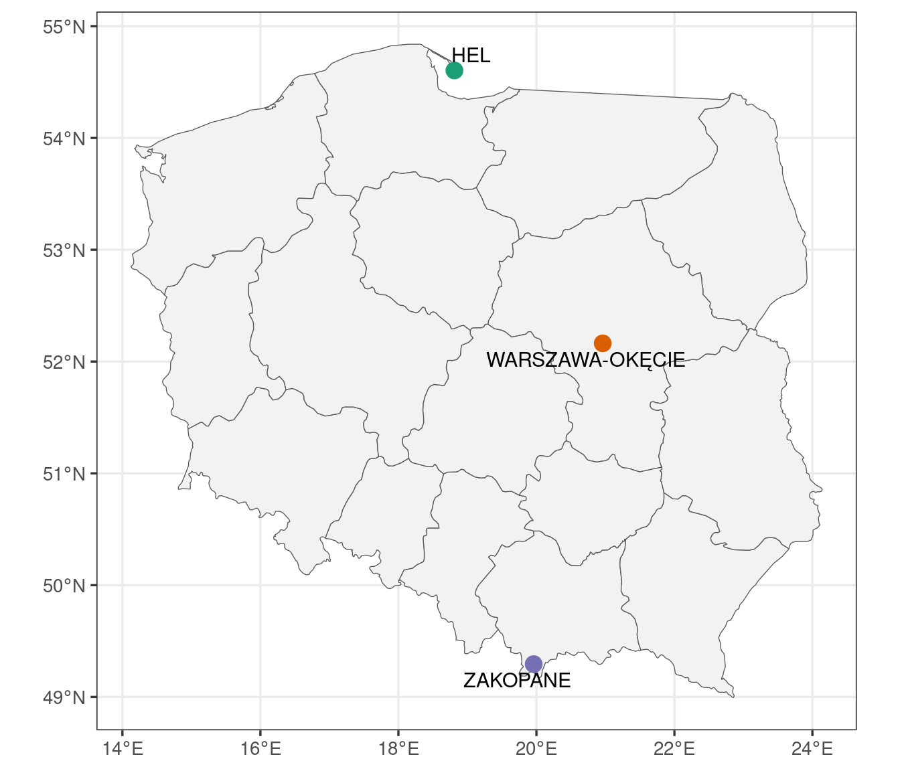
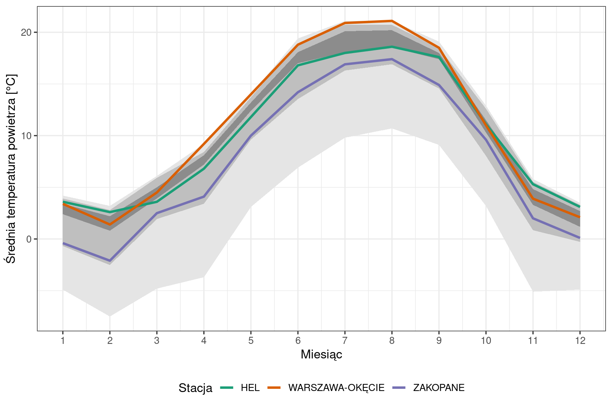
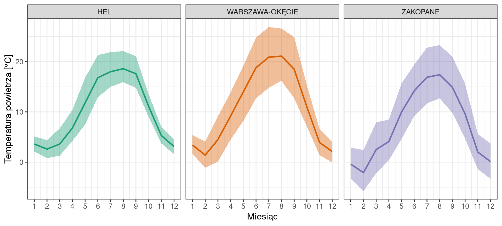
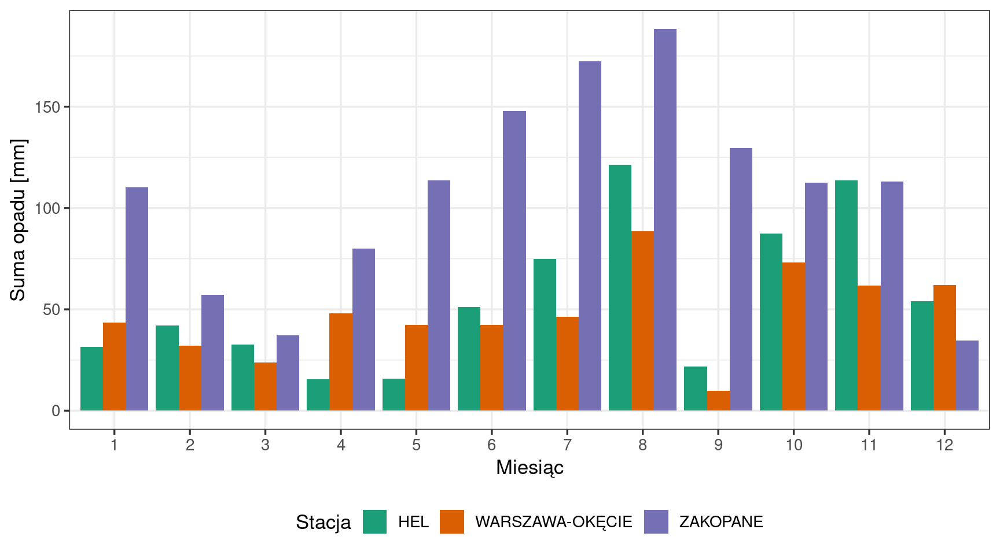
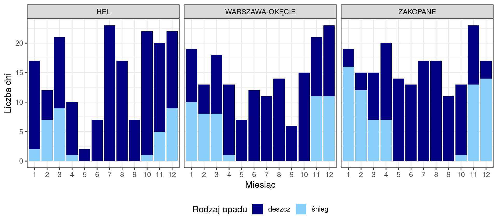
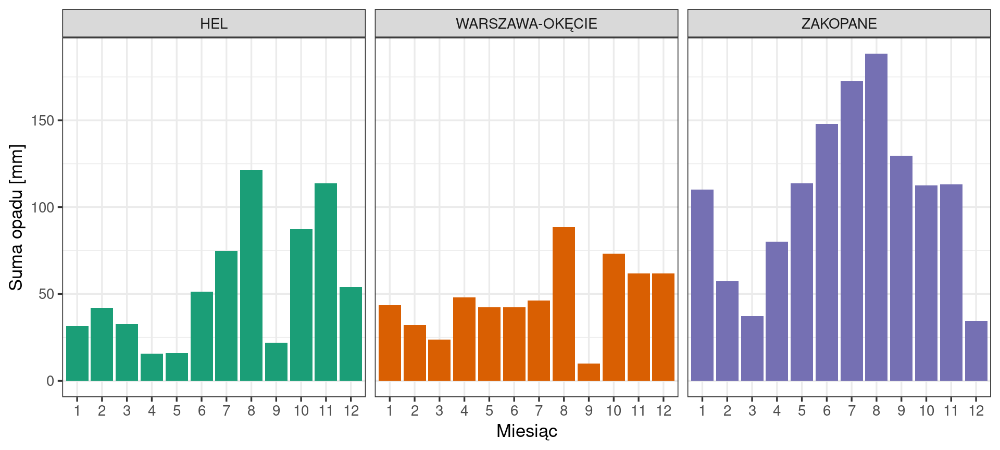
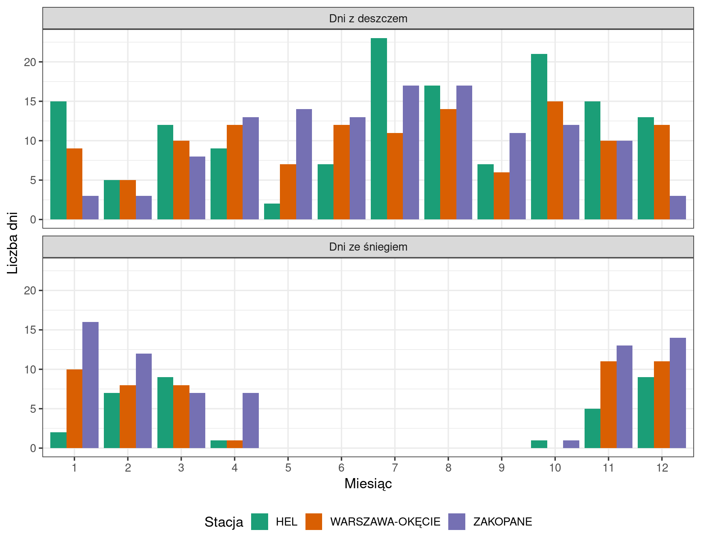
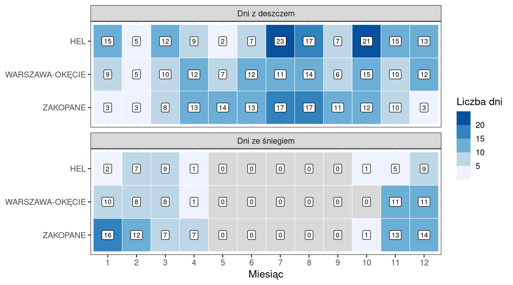
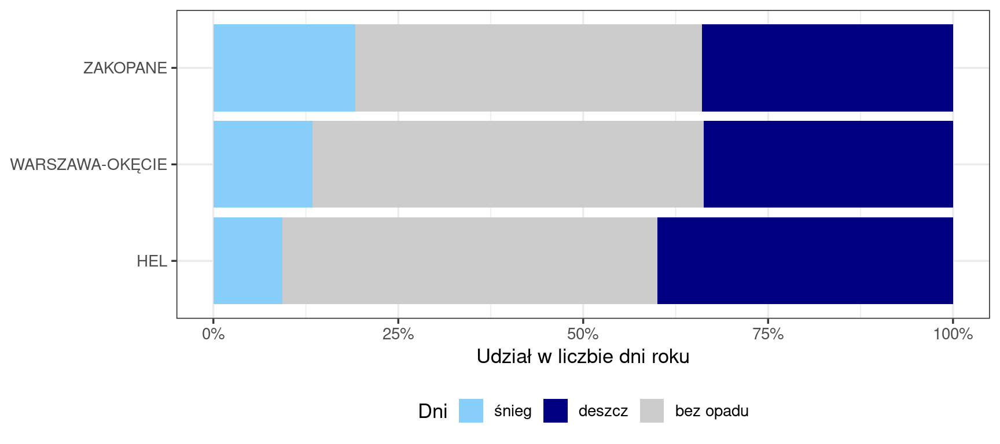
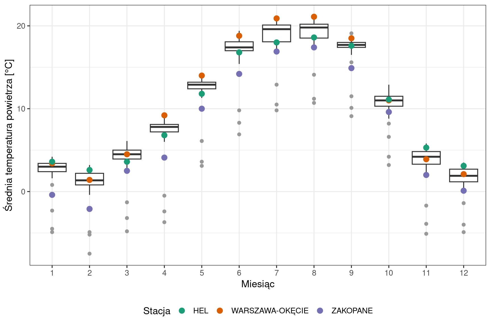

25Porównanie warunków meteorologicznych trzech stacji
Jak czytać ten rozdział
Rozdział ma postać raportu (Wprowadzenie – Wnioski), po którym następują sekcje dydaktyczne: Wybór sposobu prezentacji wyników (Sekcja 25.6) przedstawia te same wyniki na innych typach wykresów, Obliczenia w R (Sekcja 25.7) wyjaśniają kod wszystkich sekcji, a na końcu znajdują się zadania. Kod R jest w raporcie domyślnie ukryty — rozwija się go przyciskiem Kod nad wynikiem. Stacje i rok wybiera się w jednym miejscu kodu, dlatego ten sam raport można wykonać dla innego zestawu stacji i innego roku.
25.1 Wprowadzenie
Raport porównuje warunki meteorologiczne w 2023 roku na trzech stacjach synoptycznych położonych w różnych częściach Polski: na Helu (wybrzeże Bałtyku), w Warszawie-Okęciu (nizina) i w Zakopanem (podnóże Tatr). Przedstawia charakterystyki roczne stacji, przebieg temperatury powietrza i opadu w ciągu roku oraz liczbę dni z deszczem i ze śniegiem. Średnią miesięczną temperaturę na trzech stacjach przedstawiono na tle wartości z całej sieci 59 stacji synoptycznych. Dane są pobierane bezpośrednio ze zbioru IMGW-PIB za pomocą pakietu climate i przygotowywane do wizualizacji w kodzie raportu.
Raport odpowiada na pytania badawcze:
Jak różnił się przebieg średniej miesięcznej temperatury między stacjami i jak kształtował się na tle 59 stacji synoptycznych? (Sekcja 25.4.2)
Jak różniła się między stacjami różnica między średnią maksymalną a średnią minimalną temperaturą? (Sekcja 25.4.3)
Jak różniły się miesięczne sumy opadu? (Sekcja 25.4.4)
Jak różniła się liczba dni z deszczem i dni ze śniegiem? (Sekcja 25.4.5)
25.2 Dane
Raport wykorzystuje te same dane co raport „Warunki meteorologiczne wybranej stacji”: miesięczne wartości charakterystyk meteorologicznych ze stacji synoptycznych w 2023 roku, pobierane pakietem climate z publicznego zbioru danych IMGW-PIB. Źródło danych, warunki korzystania z nich, jednostkę obserwacji i liczbę obserwacji opisuje Sekcja 24.2.
25.2.1 Pobranie danych
Stacje i rok określają dwa obiekty na początku kodu. Funkcja meteo_imgw_monthly() pobiera dane wszystkich stacji synoptycznych z wybranego roku: są one potrzebne do przedstawienia trzech stacji na tle sieci (Sekcja 25.4.2), a wybrane stacje wskazuje się w dalszym kroku (Sekcja 25.2.3). Pobranie danych wymaga połączenia z internetem.
Kod
# pakiety: tidyverse (przetwarzanie danych i wykresy), sf (dane przestrzenne),# climate (pobieranie danych IMGW-PIB)library(tidyverse)library(sf)library(climate)# wybrane stacje (nazwy zapisane wielkimi literami) i rokwybrane_stacje <-c("HEL", "WARSZAWA-OKĘCIE", "ZAKOPANE")wybrany_rok <-2023# dane miesięczne wszystkich stacji synoptycznych z wybranego roku;# status = TRUE pozostawia kolumny ze statusem pomiaru, coords = TRUE dodaje współrzędne stacjimeteo_imgw <-meteo_imgw_monthly(rank ="synop", year = wybrany_rok,status =TRUE, coords =TRUE)
Tabela meteo_imgw zawiera dla 2023 roku 707 wierszy i 80 kolumn. Nazwy kolumn pochodzą ze zbioru IMGW-PIB, np. POST, MC, TMAX; kolumny statusu pomiaru mają nazwy z przedrostkiem W, np. WTMAX. Kolumny X i Y zawierają współrzędne stacji z pakietu climate.
25.2.2 Przygotowanie danych
Przygotowanie danych do wizualizacji obejmuje zastąpienie wartości oznaczających brak pomiaru brakiem danych (NA) i wybór kolumn. W raporcie wykorzystano kolumny:
Kolumna
Znaczenie
POST
nazwa stacji
X, Y
długość i szerokość geograficzna stacji [°]
MC
miesiąc (1–12)
TMAX, TMIN
absolutna maksymalna i absolutna minimalna temperatura powietrza [°C]
TMXS, TMNS
średnia maksymalna i średnia minimalna temperatura powietrza [°C]
STM
średnia miesięczna temperatura powietrza [°C]
SUMM
miesięczna suma opadu [mm]
DESD, SNID
liczba dni z opadem deszczu i z opadem śniegu
Charakterystyki temperatury powietrza. Zbiór zawiera pięć charakterystyk temperatury, które opisują miesiąc w różny sposób (nazwy według opisu danych IMGW-PIB):
absolutna maksymalna i absolutna minimalna temperatura (TMAX, TMIN) — najwyższa i najniższa temperatura zanotowana w ciągu miesiąca. Każda z nich jest jedną wartością skrajną, która wystąpiła w jednym dniu miesiąca;
średnia maksymalna i średnia minimalna temperatura (TMXS, TMNS) — średnia z temperatur maksymalnych i średnia z temperatur minimalnych poszczególnych dób miesiąca. Opisują przeciętną najwyższą i przeciętną najniższą temperaturę w ciągu doby w danym miesiącu;
średnia miesięczna temperatura (STM) — przeciętna temperatura powietrza w miesiącu.
Braki danych. Zamianę na NA wartości oznaczonych statusem braku pomiaru oraz zerowej liczby dni ze śniegiem na stacjach, na których wynosi ona 0 we wszystkich miesiącach roku, opisuje Sekcja 24.2.
Kod
# wartości oznaczone statusem braku pomiaru zamieniane na NAmeteo <- meteo_imgw |>mutate(POST =as.factor(POST),TMAX =replace(TMAX, WTMAX %in%8, NA),TMXS =replace(TMXS, WTMXS %in%8, NA),TMIN =replace(TMIN, WTMIN %in%8, NA),TMNS =replace(TMNS, WWTMNS %in%8, NA),STM =replace(STM, WSTM %in%8, NA),SUMM =replace(SUMM, WSUMM %in%8, NA),DESD =replace(DESD, WDESD %in%9, NA),SNID =replace(SNID, WSNID %in%9, NA) ) |># stacja z zerową liczbą dni ze śniegiem we wszystkich miesiącach: brak danychgroup_by(POST) |>mutate(SNID =replace(SNID, all(SNID ==0, na.rm =TRUE), NA)) |>ungroup() |># kolumny wykorzystywane w raporcieselect(POST, X, Y, MC, TMAX, TMXS, TMIN, TMNS, STM, SUMM, DESD, SNID)
25.2.3 Wartości miesięczne i położenie wybranych stacji
Kod
# obserwacje z wybranych stacji: 3 stacje × 12 miesięcy = 36 wierszystacje_dane <- meteo |>filter(POST %in% wybrane_stacje)
Tabela stacje_dane zawiera 36 obserwacji (3 stacje × 12 miesięcy). Dla trzech wybranych stacji wszystkie wykorzystane kolumny są kompletne (brak wartości NA).
Kod
# położenie stacji: jeden wiersz dla stacji (współrzędne są takie same w każdym miesiącu)stacje_polozenie <- stacje_dane |>filter(MC ==1) |>st_as_sf(coords =c("X", "Y"), crs =4326)# granice województw (Natural Earth)wojewodztwa <-st_read("dane/wojewodztwa.gpkg", quiet =TRUE)
Kod
# pakiet do rozmieszczania etykiet bez nakładania sięlibrary(ggrepel)# mapa: granice województw, punkty stacji w kolorach stacji i ich nazwyggplot() +geom_sf(data = wojewodztwa, fill ="grey95") +geom_sf(data = stacje_polozenie, aes(colour = POST), size =4) +geom_text_repel(data = stacje_polozenie,aes(label = POST, geometry = geometry),stat ="sf_coordinates", size =4) +scale_colour_brewer(palette ="Dark2") +# kolory stacji (paleta Brewer)labs(x =NULL, y =NULL) +theme_bw(base_size =13) +theme(legend.position ="none") # nazwy stacji podane na mapie

Rycina 25.1: Położenie porównywanych stacji synoptycznych
Porównywane stacje (Rycina 25.1) leżą w trzech różnych regionach: Hel — na Mierzei Helskiej nad Bałtykiem, Warszawa-Okęcie — na Nizinie Mazowieckiej w środkowej Polsce, Zakopane — u podnóża Tatr. Każda stacja ma na wszystkich rycinach raportu ten sam kolor.
25.3 Metody
Raport przedstawia wartości miesięczne z trzech stacji oraz wartości roczne obliczone z 12 wartości miesięcznych. Dobór tabel i wykresów:
Charakterystyki roczne stacji — tabela: średnia z 12 wartości średniej miesięcznej temperatury, najniższa i najwyższa średnia miesięczna temperatura oraz ich różnica, absolutna minimalna i absolutna maksymalna temperatura w roku, roczna suma opadu i roczna liczba dni z deszczem i ze śniegiem.
Średnia miesięczna temperatura na tle sieci stacji — wykres wstęgowy. Dla każdego miesiąca z wartości STM wszystkich 59 stacji obliczono: wartość najmniejszą i największą, kwantyle rzędu 0,05 i 0,95 (5. i 95. percentyl) oraz kwartyle (kwantyle rzędu 0,25 i 0,75). Kwantyl rzędu p to wartość, poniżej której znajduje się część p uporządkowanych obserwacji: między 5. a 95. percentylem leży środkowe 90% wartości ze stacji, a między kwartylami — środkowe 50%. Trzy zagnieżdżone wstęgi przedstawiają te zakresy, a linie — wartości z trzech porównywanych stacji. Liczba stacji z wartością STM wynosi w poszczególnych miesiącach od 56 do 59.
Średnia maksymalna i średnia minimalna temperatura — wykres wstęgowy w osobnym panelu dla każdej stacji: wstęga od TMNS do TMXS, linia — STM.
Sumy opadu — wykres słupkowy zgrupowany: dla każdego miesiąca trzy słupki obok siebie, po jednym dla stacji.
Dni z deszczem i ze śniegiem — wykres słupkowy skumulowany w osobnym panelu dla każdej stacji. Kategorie są rozłączne, dlatego wysokość słupka jest liczbą dni z opadem w miesiącu.
25.4 Wyniki
25.4.1 Charakterystyki roczne stacji
Kod
# wartości roczne obliczone z 12 wartości miesięcznych dla każdej stacjistacje_dane |>group_by(POST) |>summarise(temp_sr_rok =mean(STM), # średnia z 12 średnich miesięcznychtemp_sr_najnizsza =min(STM),temp_sr_najwyzsza =max(STM),temp_sr_roznica = temp_sr_najwyzsza - temp_sr_najnizsza,temp_min_abs_rok =min(TMIN), # najniższa temperatura w rokutemp_max_abs_rok =max(TMAX), # najwyższa temperatura w rokuopad_rok =sum(SUMM),dni_deszcz_rok =sum(DESD),dni_snieg_rok =sum(SNID) ) |> knitr::kable(col.names =c("Stacja","Temp. średnia — średnia z 12 miesięcy [°C]","Temp. średnia — najniższa [°C]", "Temp. średnia — najwyższa [°C]","Różnica [°C]","Temp. min. absolutna [°C]", "Temp. maks. absolutna [°C]","Suma opadu [mm]", "Dni z deszczem", "Dni ze śniegiem"),digits =1,format.args =list(decimal.mark =",") )
Średnia z 12 wartości średniej miesięcznej temperatury (Tabela 25.1) wyniosła 9,9°C na Helu i 10,7°C w Warszawie-Okęciu, a w Zakopanem była niższa o ponad 2°C (7,4°C). Różnica między najwyższą a najniższą średnią miesięczną temperaturą była najmniejsza na Helu (16,0°C), a w Warszawie-Okęciu i w Zakopanem wynosiła 19,7 i 19,5°C. Absolutna minimalna temperatura wynosiła od −4,7°C (Hel) do −17,7°C (Zakopane), a absolutna maksymalna — od 29,1°C (Zakopane) do 34,3°C (Warszawa-Okęcie). Roczna suma opadu w Zakopanem (1296,9 mm) była 2,0 razy większa niż na Helu (661,9 mm) i 2,3 razy większa niż w Warszawie-Okęciu (573,5 mm). Hel miał najwięcej dni z deszczem (146), Zakopane — najwięcej dni ze śniegiem (70).
25.4.2 Przebieg średniej miesięcznej temperatury na tle sieci stacji
Kod
# wartości średniej miesięcznej temperatury z 59 stacji w każdym miesiącu:# minimum, kwantyle rzędu 0,05; 0,25; 0,75; 0,95 i maksimumsiec <- meteo |>group_by(MC) |>summarise(minimum =min(STM, na.rm =TRUE),p05 =quantile(STM, probs =0.05, na.rm =TRUE),q1 =quantile(STM, probs =0.25, na.rm =TRUE),q3 =quantile(STM, probs =0.75, na.rm =TRUE),p95 =quantile(STM, probs =0.95, na.rm =TRUE),maksimum =max(STM, na.rm =TRUE) )
Kod
# trzy wstęgi z tabeli siec (od najszerszej) i linie z tabeli stacje_daneggplot() +geom_ribbon(data = siec, aes(x = MC, ymin = minimum, ymax = maksimum),fill ="grey90") +geom_ribbon(data = siec, aes(x = MC, ymin = p05, ymax = p95),fill ="grey75") +geom_ribbon(data = siec, aes(x = MC, ymin = q1, ymax = q3),fill ="grey55") +geom_line(data = stacje_dane, aes(x = MC, y = STM, colour = POST),linewidth =1.2) +# kolor linii według stacjiscale_colour_brewer(palette ="Dark2") +scale_x_continuous(breaks =1:12) +labs(x ="Miesiąc", y ="Średnia temperatura powietrza [°C]", colour ="Stacja") +theme_bw(base_size =13) +theme(legend.position ="bottom")

Rycina 25.2: Średnia miesięczna temperatura powietrza (STM) na trzech stacjach (linie) na tle 59 stacji synoptycznych, 2023. Wstęgi 59 stacji: najjaśniejsza — od wartości najmniejszej do największej, środkowa — od 5. do 95. percentyla, najciemniejsza — od pierwszego do trzeciego kwartyla
Średnia miesięczna temperatura w Zakopanem (Rycina 25.2) była we wszystkich miesiącach niższa od pierwszego kwartyla i wyższa od 5. percentyla wartości z 59 stacji. W Warszawie-Okęciu od października do marca mieściła się między kwartylami, a od kwietnia do września była wyższa od trzeciego kwartyla; w kwietniu, maju, lipcu i sierpniu przekroczyła 95. percentyl (9,2; 14,0; 20,9 i 21,1°C). Przebieg temperatury na Helu różnił się od pozostałych stacji: od marca do lipca temperatura była niższa od pierwszego kwartyla, od sierpnia do października mieściła się między kwartylami, a od listopada do lutego była wyższa od trzeciego kwartyla wartości z 59 stacji. Na Helu od października do lutego średnia miesięczna temperatura była wyższa niż w Warszawie-Okęciu, a od marca do września — niższa. Najniższą średnią miesięczną temperaturę na wszystkich trzech stacjach odnotowano w lutym: 2,6°C na Helu, 1,4°C w Warszawie-Okęciu i −2,1°C w Zakopanem.
25.4.3 Średnia maksymalna i średnia minimalna temperatura na stacjach
Kod
# wstęga i linia w osobnym panelu dla każdej stacjiggplot(stacje_dane, aes(x = MC)) +geom_ribbon(aes(ymin = TMNS, ymax = TMXS, fill = POST), alpha =0.4) +geom_line(aes(y = STM, colour = POST), linewidth =1) +facet_wrap(~ POST) +# osobny panel dla stacjiscale_fill_brewer(palette ="Dark2") +scale_colour_brewer(palette ="Dark2") +scale_x_continuous(breaks =1:12) +labs(x ="Miesiąc", y ="Temperatura powietrza [°C]") +theme_bw(base_size =13) +theme(legend.position ="none") # nazwy stacji w nagłówkach paneli

Rycina 25.3: Średnia maksymalna i średnia minimalna temperatura powietrza (wstęga, TMNS–TMXS) i średnia miesięczna temperatura (linia, STM) na trzech stacjach, 2023
Różnica między średnią maksymalną a średnią minimalną temperaturą (TMXS − TMNS) była najmniejsza na Helu (Rycina 25.3) — średnio 5,5°C, od 2,9°C w grudniu do 9,3°C w maju. W Warszawie-Okęciu wynosiła średnio 8,6°C (od 3,8°C w styczniu do 12,2°C we wrześniu), a w Zakopanem — 9,3°C (od 6,2°C w styczniu do 11,2°C we wrześniu). W każdym miesiącu wstęga na Helu jest węższa niż na dwóch pozostałych stacjach.
25.4.4 Zmienność miesięcznych sum opadu
Kod
# wykres słupkowy zgrupowany: dla każdego miesiąca słupki stacji obok siebieggplot(stacje_dane, aes(x =factor(MC), y = SUMM, fill = POST)) +geom_col(position ="dodge") +scale_fill_brewer(palette ="Dark2") +labs(x ="Miesiąc", y ="Suma opadu [mm]", fill ="Stacja") +theme_bw(base_size =13) +theme(legend.position ="bottom")

Rycina 25.4: Miesięczna suma opadu na trzech stacjach, 2023
Miesięczna suma opadu w Zakopanem (Rycina 25.4) była najwyższa spośród trzech stacji w 10 miesiącach; wyjątkami są listopad (wyższa na Helu: 113,6 mm) i grudzień (wyższa w Warszawie-Okęciu: 61,9 mm i na Helu: 53,9 mm). Najwyższą sumę miesięczną na wszystkich trzech stacjach odnotowano w sierpniu: 188,3 mm w Zakopanem, 121,4 mm na Helu i 88,6 mm w Warszawie-Okęciu. Najniższa suma miesięczna przypadła na kwiecień na Helu (15,5 mm), wrzesień w Warszawie-Okęciu (9,9 mm) i grudzień w Zakopanem (34,5 mm). W Warszawie-Okęciu sumy miesięczne nie przekraczały 90 mm.
25.4.5 Dni z opadem deszczu i śniegu
Kod
# zamiana tabeli z postaci szerokiej na długą: jedna kolumna z rodzajem opadustacje_dni <- stacje_dane |>pivot_longer(cols =c(DESD, SNID),names_to ="rodzaj",values_to ="dni" )
Kod
# wykres słupkowy skumulowany w osobnym panelu dla każdej stacjiggplot(stacje_dni, aes(x =factor(MC), y = dni, fill = rodzaj)) +geom_col(position ="stack") +facet_wrap(~ POST) +scale_fill_manual(values =c(DESD ="navy", SNID ="lightskyblue"),labels =c("deszcz", "śnieg")) +labs(x ="Miesiąc", y ="Liczba dni", fill ="Rodzaj opadu") +theme_bw(base_size =13) +theme(legend.position ="bottom")

Rycina 25.5: Liczba dni z deszczem i ze śniegiem na trzech stacjach, 2023
Liczba dni z opadem w 2023 roku (Rycina 25.5) wynosiła 180 na Helu, 172 w Warszawie-Okęciu i 194 w Zakopanem. Na wszystkich stacjach przeważały dni z deszczem. Dni ze śniegiem było 34 na Helu (w 7 miesiącach, najwięcej w marcu i grudniu — po 9), 49 w Warszawie-Okęciu (w 6 miesiącach, najwięcej w listopadzie i grudniu — po 11) i 70 w Zakopanem (w 7 miesiącach, najwięcej w styczniu — 16). Na Helu najwięcej dni z deszczem odnotowano w lipcu (23) i październiku (21).
25.5 Wnioski
Średnia miesięczna temperatura (Sekcja 25.4.2). Zakopane było chłodniejsze od pozostałych stacji przez cały rok, a jego wartości leżały poniżej pierwszego kwartyla wartości z 59 stacji. Hel był cieplejszy od Warszawy-Okęcia od października do lutego, a chłodniejszy od marca do września; od listopada do lutego jego wartości przekraczały trzeci kwartyl wartości z 59 stacji. W Warszawie-Okęciu wartości przekroczyły 95. percentyl w 4 miesiącach.
Średnia maksymalna i średnia minimalna temperatura (Sekcja 25.4.3). Różnica między nimi była najmniejsza na Helu (średnio 5,5°C), większa w Warszawie-Okęciu (8,6°C) i w Zakopanem (9,3°C); największa była w maju na Helu, a we wrześniu na dwóch pozostałych stacjach.
Opady atmosferyczne (Sekcja 25.4.4). Roczna suma opadu wyniosła 661,9 mm na Helu, 573,5 mm w Warszawie-Okęciu i 1296,9 mm w Zakopanem; Zakopane miało najwyższą sumę miesięczną w 10 miesiącach.
Dni z opadem (Sekcja 25.4.5). Hel miał najwięcej dni z deszczem (146); Zakopane — najwięcej dni ze śniegiem (70) i najwięcej dni z opadem (194).
25.6 Wybór sposobu prezentacji wyników
25.6.1 Miesięczne sumy opadu
Te same sumy opadu przedstawiono w innej formie niż w Wynikach: jako słupki w osobnych panelach (Rycina 25.6).
Kod
ggplot(stacje_dane, aes(x =factor(MC), y = SUMM, fill = POST)) +geom_col() +facet_wrap(~ POST) +scale_fill_brewer(palette ="Dark2") +labs(x ="Miesiąc", y ="Suma opadu [mm]") +theme_bw(base_size =13) +theme(legend.position ="none")

Rycina 25.6: Miesięczna suma opadu na trzech stacjach, 2023 — wykres słupkowy w osobnych panelach
Wykres słupkowy zgrupowany (Rycina 25.4) — słupki stacji znajdują się obok siebie, więc porównanie stacji w danym miesiącu wymaga porównania wysokości sąsiednich słupków. Przebieg roczny jednej stacji odczytuje się trudniej, ponieważ jej słupki są rozdzielone słupkami pozostałych stacji.
Słupki w osobnych panelach (Rycina 25.6) — każdy panel przedstawia przebieg roczny jednej stacji. Wspólna oś y pozwala porównać wielkość sum między stacjami; porównanie stacji w konkretnym miesiącu wymaga odszukania słupka w trzech panelach.
W raporcie wykorzystano wykres słupkowy zgrupowany, ponieważ celem jest porównanie stacji w kolejnych miesiącach.
25.6.2 Dni z deszczem i ze śniegiem
W Wynikach liczbę dni z deszczem i ze śniegiem przedstawiono jako słupki skumulowane w osobnym panelu dla każdej stacji (Rycina 25.5). Te same dane można przedstawić także jako słupki zgrupowane w panelach według rodzaju opadu (Rycina 25.7), jako wykres kafelkowy (Rycina 25.8) albo — po zsumowaniu w roku — jako strukturę dni roku (Rycina 25.9).
Kod
# panel dla rodzaju opadu, w panelu słupki stacji obok siebieggplot(stacje_dni, aes(x =factor(MC), y = dni, fill = POST)) +geom_col(position ="dodge") +facet_wrap(~ rodzaj, ncol =1, # panele jeden pod drugimlabeller =as_labeller(c(DESD ="Dni z deszczem",SNID ="Dni ze śniegiem"))) +scale_fill_brewer(palette ="Dark2") +labs(x ="Miesiąc", y ="Liczba dni", fill ="Stacja") +theme_bw(base_size =13) +theme(legend.position ="bottom")

Rycina 25.7: Liczba dni z deszczem i ze śniegiem na trzech stacjach, 2023 — wykres słupkowy zgrupowany w panelach według rodzaju opadu
Kod
# wykres kafelkowy: miesiące na osi x, stacje na osi y, panel dla rodzaju opaduggplot(stacje_dni, aes(x =factor(MC), y =fct_rev(POST),fill =na_if(dni, 0))) +geom_tile(colour ="white") +geom_label(aes(label = dni), fill ="white", size =3) +facet_wrap(~ rodzaj, ncol =1,labeller =as_labeller(c(DESD ="Dni z deszczem",SNID ="Dni ze śniegiem"))) +scale_fill_fermenter(breaks =c(5, 10, 15, 20), palette ="Blues", direction =1,na.value ="grey85") +labs(x ="Miesiąc", y =NULL, fill ="Liczba dni") +theme_bw(base_size =13)

Rycina 25.8: Liczba dni z deszczem i ze śniegiem na trzech stacjach, 2023 — wykres kafelkowy; szary kafelek — brak dni z danym rodzajem opadu (0)
Kod
# struktura dni roku: dni z deszczem, ze śniegiem i bez opadustruktura_roku <- stacje_dane |>group_by(POST) |>summarise(DESD =sum(DESD),SNID =sum(SNID),dni_razem =sum(days_in_month(make_date(wybrany_rok, MC))) # liczba dni w miesiącach z danymi ) |>mutate(dni_bez_opadu = dni_razem - DESD - SNID) |>pivot_longer(cols =c(DESD, SNID, dni_bez_opadu),names_to ="rodzaj", values_to ="dni")
Kod
# słupki skumulowane do 100%: długość części słupka = udział dni w rokuggplot(struktura_roku, aes(x = POST, y = dni, fill = rodzaj)) +geom_col(position ="fill") +coord_flip() +# słupki poziomescale_fill_manual(values =c(DESD ="navy", SNID ="lightskyblue",dni_bez_opadu ="grey80"),breaks =c("SNID", "DESD", "dni_bez_opadu"),labels =c("śnieg", "deszcz", "bez opadu")) +scale_y_continuous(labels = scales::label_percent()) +# oś w procentachlabs(x =NULL, y ="Udział w liczbie dni roku", fill ="Dni") +theme_bw(base_size =13) +theme(legend.position ="bottom")

Rycina 25.9: Struktura dni roku na trzech stacjach: dni z deszczem, ze śniegiem i bez opadu, 2023
Słupki skumulowane w panelach stacji (Rycina 25.5) — każdy panel przedstawia przebieg roczny jednej stacji; wysokość słupka jest liczbą dni z opadem w miesiącu, a jego podział — liczbą dni z deszczem i ze śniegiem. Porównanie stacji wymaga porównywania paneli.
Słupki zgrupowane w panelach według rodzaju opadu (Rycina 25.7) — w każdym miesiącu słupki trzech stacji znajdują się obok siebie, dlatego stacje porównuje się bezpośrednio, osobno dla deszczu i dla śniegu. Łącznej liczby dni z opadem wykres nie przedstawia.
Wykres kafelkowy (Rycina 25.8) — przedstawia wszystkie 72 wartości (3 stacje × 12 miesięcy × 2 rodzaje opadu) w zwartej formie, z liczbą dni w każdym kafelku. Szare kafelki wyróżniają miesiące bez dni ze śniegiem. Różnice między wartościami odczytuje się z koloru klasy albo z liczb.
Struktura dni roku (Rycina 25.9) — przedstawia wartości roczne jako udział w 365 dniach roku: udział dni ze śniegiem wynosi 9,3% na Helu, 13,4% w Warszawie-Okęciu i 19,2% w Zakopanem, a dni bez opadu — odpowiednio 50,7%, 52,9% i 46,8%. Wykres pomija przebieg w ciągu roku. Udziały są poprawne, ponieważ kategorie są rozłączne, a ich suma wynosi 365 dni.
Wybór formy zależy od pytania: przebieg roczny na każdej stacji przedstawiają słupki skumulowane w panelach stacji (forma użyta w Wynikach), porównanie stacji w kolejnych miesiącach — słupki zgrupowane w panelach według rodzaju opadu, a porównanie całego roku — struktura dni roku.
25.6.3 Porównanie z siecią stacji: wykres wstęgowy a wykres pudełkowy
W rozdziale „Warunki meteorologiczne wybranej stacji” stację porównano z siecią 59 stacji na wykresach pudełkowych z dodanymi punktami stacji. Ta sama forma dla trzech stacji została przedstawiona na rycinie 25.10.
Kod
ggplot(meteo, aes(x =factor(MC), y = STM)) +geom_boxplot(na.rm =TRUE, outlier.colour ="grey60") +geom_point(data = stacje_dane, aes(colour = POST), size =3) +scale_colour_brewer(palette ="Dark2") +labs(x ="Miesiąc", y ="Średnia temperatura powietrza [°C]", colour ="Stacja") +theme_bw(base_size =13) +theme(legend.position ="bottom")

Rycina 25.10: Średnia miesięczna temperatura powietrza na 59 stacjach (wykresy pudełkowe) i na trzech porównywanych stacjach (punkty), 2023
Wykres pudełkowy (Rycina 25.10) — każde pudełko przedstawia rozkład wartości z 59 stacji w jednym miesiącu: medianę, kwartyle, zakres wąsów i wartości odstające. Przy trzech stacjach punkty w tym samym miesiącu leżą w jednej kolumnie i mogą się nakładać; przebieg roczny stacji trzeba odczytać z położenia punktów w kolejnych pudełkach.
Wykres wstęgowy (Rycina 25.2) — wstęgi przedstawiają zakresy wartości z 59 stacji jako ciągłe pasma (kwartyle są wspólne z pudełkiem), a linie — przebieg roczny każdej stacji. Wykres nie pokazuje mediany ani pojedynczych wartości odstających; zakres skrajnych wartości przedstawia najjaśniejsza wstęga.
Do porównania jednej stacji z siecią wystarcza wykres pudełkowy z punktem. Przy kilku stacjach czytelniejszy jest wykres wstęgowy, ponieważ przebieg każdej stacji przedstawia linia w odrębnym kolorze.
25.7 Obliczenia w R
Sekcja wyjaśnia kod w kolejności jego użycia w raporcie. Elementy omówione we wcześniejszych rozdziałach są opisane krótko, z odesłaniem.
25.7.1 Dane
Nazwy kolumn pochodzą ze zbioru IMGW-PIB. Rozdział „Warunki meteorologiczne w Polsce w 2020 roku” korzysta z pliku meteo2020.csv, w którym te same charakterystyki mają nazwy opisowe, np. temp_sr zamiast STM.
meteo_imgw_monthly() i jej argumenty rank, year i status, a także komunikat wyświetlany, gdy dane nie mogą zostać pobrane, omówiono w Sekcja 24.8. coords = TRUE dodaje kolumny X i Y ze współrzędnymi stacji w układzie WGS 84 (EPSG:4326), potrzebne do mapy. Tabela meteo zawiera dane wszystkich 59 stacji; jest potrzebna do obliczenia wstęg w Sekcja 25.4.2 i do wykresu pudełkowego w Sekcja 25.6.
Przygotowanie tabeli meteo powtarza kod z Sekcja 24.2.2: replace() w mutate() zamienia wartości oznaczone statusem braku pomiaru na NA, a group_by(POST) z all() wskazuje stacje z zerową liczbą dni ze śniegiem przez cały rok. Tabela zawiera dodatkowo współrzędne stacji.
wybrany_rok <- 2023 zapisuje rok w obiekcie. Liczba stacji w zbiorze zależy od roku, a dane z najnowszych lat mogą być niepełne albo jeszcze niedostępne.
wybrane_stacje <- c("HEL", "WARSZAWA-OKĘCIE", "ZAKOPANE") zapisuje w obiekcie wektor — ciąg trzech nazw połączonych funkcją c(). Nazwy muszą mieć postać taką jak w kolumnie POST, w tym wielkie litery.
filter(POST %in% wybrane_stacje) pozostawia wiersze, w których nazwa stacji jest jednym z elementów wektora. Operator %in% sprawdza przynależność wartości do zbioru (zastosowany w Sekcja 22.4 do wyboru miesięcy). Zmiana zawartości wektora wystarcza, aby wykonać raport dla innych stacji.
Współrzędne stacji są takie same w każdym miesiącu, dlatego filter(MC == 1) pozostawia jeden wiersz dla każdej stacji. st_as_sf(), st_read() i geom_text_repel() powtarzają kod mapy stacji z Sekcja 22.3 (Sekcja 5.7.6).
aes(colour = POST) w geom_sf() nadaje punktom kolor według stacji. scale_colour_brewer(palette = "Dark2") przypisuje kolory z jakościowej palety Brewer "Dark2" — palety o wyraźnie różnych barwach, przeznaczonej dla kategorii bez uporządkowania. Kolory są przypisywane stacjom w kolejności alfabetycznej, dlatego każda stacja ma ten sam kolor na wszystkich rycinach raportu. Po zmianie zestawu stacji kolory zostają w ten sam sposób przypisane nowym stacjom. scale_fill_brewer() działa tak samo dla koloru wypełnienia (fill).
theme(legend.position = "none") usuwa legendę, gdy nazwy stacji podane są na rycinie (na mapie lub w nagłówkach paneli).
25.7.2 Charakterystyki roczne stacji
group_by(POST) i summarise() obliczają wartości roczne dla każdej stacji (Sekcja 22.3): mean() — średnią z 12 wartości miesięcznych, min() i max() — najmniejszą i największą wartość, sum() — sumę roczną.
W summarise() można odwołać się do kolumny obliczonej wcześniej w tym samym wywołaniu: temp_sr_roznica powstaje z temp_sr_najwyzsza i temp_sr_najnizsza.
Funkcje nie mają argumentu na.rm = TRUE: dla stacji z brakami danych wynik w tabeli wynosi NA. Wartość roczna obliczona z niepełnego roku nie byłaby porównywalna z wartościami dla stacji z kompletnymi danymi.
knitr::kable() formatuje wynik jako tabelę (rozdział „Warunki meteorologiczne wybranej stacji”, sekcja Dane).
25.7.3 Przebieg średniej miesięcznej temperatury
Tabela siec powstaje z potoku: group_by(MC) grupuje obserwacje wszystkich 59 stacji według miesiąca, a summarise() oblicza dla każdego miesiąca sześć wartości.
quantile(STM, probs = 0.05) oblicza kwantyl rzędu podanego w probs (quantile() zastosowano w rozdziale „Oczekiwana długość życia na kontynentach w latach 1952–2007” do kwartyli). probs = 0.05 i 0.95 dają 5. i 95. percentyl, a 0.25 i 0.75 — pierwszy i trzeci kwartyl. na.rm = TRUE pomija 12 braków danych w STM.
Wykres łączy warstwy z dwóch tabel: wstęgi z tabeli siec, linie z tabeli stacje_dane. Dlatego ggplot() nie ma argumentów, a każda warstwa ma własne data i aes(). Wstęgi są rysowane od najszerszej do najwęższej, aby węższe nie zostały zasłonięte (kolejność warstw — rozdział „Warunki meteorologiczne wybranej stacji”).
colour = POST w aes() warstwy geom_line() rysuje osobną linię dla każdej stacji w innym kolorze i tworzy legendę; labs(colour = "Stacja") ustala jej tytuł.
scale_x_continuous(breaks = 1:12) ustawia podziałkę osi x co miesiąc (rozdział „Warunki meteorologiczne wybranej stacji”).
25.7.4 Średnia maksymalna i średnia minimalna temperatura
Wstęga (geom_ribbon()) i linia (geom_line()) powtarzają wykres z rozdziału „Warunki meteorologiczne wybranej stacji”. fill = POST i colour = POST w aes() nadają wstędze i linii kolor stacji; alpha = 0.4 ustala przezroczystość wstęgi, aby linia była na niej widoczna.
facet_wrap(~ POST) dzieli wykres na panele, po jednym dla stacji (Sekcja 22.5.3). Wszystkie panele mają wspólną skalę osi y, dlatego szerokości wstęg można porównywać.
25.7.5 Opad i dni z opadem
geom_col(position = "dodge") rysuje słupki stacji obok siebie (wykres zgrupowany), a position = "stack" — jeden na drugim (wykres skumulowany); fill = POST nadaje słupkom kolor stacji.
Wykres liczby dni powtarza kod z rozdziału „Warunki meteorologiczne wybranej stacji”; pivot_longer() zamienia tabelę na postać długą (Sekcja 22.5.3), a facet_wrap(~ POST) tworzy panel dla każdej stacji.
25.7.6 Wybór sposobu prezentacji wyników
Słupki w panelach: geom_col() bez argumentu position z facet_wrap(~ POST) — w każdym panelu jest tylko jedna stacja, więc słupki nie nachodzą na siebie.
Słupki zgrupowane według rodzaju opadu: fill = POST z position = "dodge" i facet_wrap(~ rodzaj). ncol = 1 układa panele jeden pod drugim, a labeller nadaje im nagłówki (Sekcja 22.4).
Wykres kafelkowy powtarza wykres z rozdziału „Warunki meteorologiczne wybranej stacji”: na_if(dni, 0) nadaje kafelkom z wartością 0 kolor na.value. Stacje są na osi y; fct_rev() odwraca ich kolejność, aby pierwsza alfabetycznie była na górze (Sekcja 22.4). size = 3 w geom_label() zmniejsza etykiety.
Struktura dni roku: summarise() sumuje dni w roku, mutate() oblicza liczbę dni bez opadu (dni_razem minus dni z deszczem i ze śniegiem), a pivot_longer() zamienia trzy kolumny na postać długą.
Kolumna dni_razem zawiera liczbę dni w miesiącach z danymi, obliczoną z roku i miesiąca: make_date(wybrany_rok, MC) (pakiet lubridate, część tidyverse) tworzy datę pierwszego dnia miesiąca, a days_in_month() podaje liczbę dni tego miesiąca. Dla pełnego roku suma wynosi 366 w roku przestępnym i 365 w pozostałych, a przy niepełnych danych obejmuje tylko dostępne miesiące.
position = "fill" w geom_col() układa części słupka jedna na drugiej i wydłuża słupek do wartości 1: długość części odpowiada udziałowi kategorii w sumie (wykres skumulowany do 100%).
coord_flip() zamienia osie miejscami — słupki są poziome, a nazwy stacji mieszczą się na osi bez nakładania.
scale_y_continuous(labels = scales::label_percent()) opisuje oś wartościami procentowymi (0,25 → 25%); funkcja pochodzi z pakietu scales, instalowanego razem z ggplot2. breaks w scale_fill_manual() ustala kolejność pozycji w legendzie — taką samą jak kolejność części słupka.
Wykres pudełkowy z punktami stacji powtarza kod z rozdziału „Warunki meteorologiczne wybranej stacji”; aes(colour = POST) w geom_point() nadaje punktom kolor stacji, a outlier.colour = "grey60" — szary kolor wartościom odstającym, aby odróżniały się od punktów stacji.
25.8 Zadania do samodzielnego wykonania
Zadanie 1. Inny zestaw stacji. Otwórz plik kod/25_meteo_trzy_stacje.qmd, zmień zawartość wektora wybrane_stacje na nazwy trzech innych stacji (np. "ŚWINOUJŚCIE", "SUWAŁKI", "ŚNIEŻKA") i wyrenderuj dokument przyciskiem Render (Sekcja 7.6). Ta jedna zmiana tworzy od nowa wszystkie tabele i ryciny dla wybranych stacji. Podpisy rycin i tekst opisujący wyniki są zapisane w pliku na stałe, dlatego w nowym raporcie należy je zmienić samodzielnie. Porównaj wyniki z wynikami dla Helu, Warszawy-Okęcia i Zakopanego. Nazwy wszystkich stacji wyświetla levels(meteo$POST).
Zadanie 2. Czwarta stacja. Dopisz do wektora wybrane_stacje czwartą stację (np. "SUWAŁKI"). Sprawdź, jak zmieniają się tabela charakterystyk rocznych i ryciny. Które formy wykresu pozostają czytelne przy czterech stacjach, a które stają się mniej czytelne?